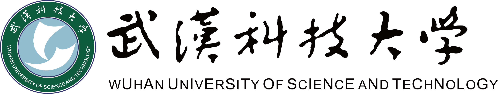

U.S. News 2027 全美综合大学并列第 42U.S. News 2026 工程学院研究生全美第 34
机械工程硕士 M.S. Mechanical Engineering
机电一体化方向 · Mechatronics
2024 — 2026 · Boston, MAGPA 3.68
Control Systems EngineeringRobot Mechanics and ControlMechatronic SystemsMath Methods for Mechanical EngineeringMobile RoboticsElectric DrivesRobotic Navigation & Sensing 正在修读

武汉科技大学 · Wuhan University of Science and Technology